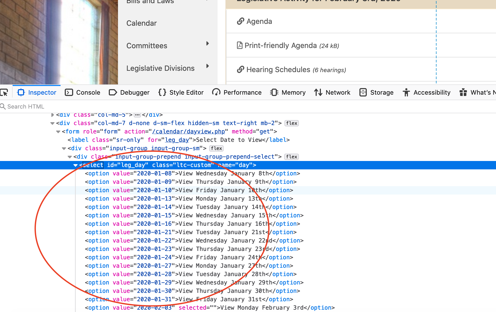

Continuing a discussion from the last chapter, this is an example of when it goes from Easy to Moderately Difficult.
In the last exercise, we scraped bills out of one day of floor activity in the Nebraska Legislature. What if we wanted all of them? Let’s say we wanted to keep a running scoreboard of who has introduced the most bills that have seen the floor?
Here’s how to use some programming knowledge with R to grab all days and merge them together. First we start with libraries, as we always do.
library(tidyverse)
── Attaching core tidyverse packages ──────────────────────── tidyverse 2.0.0 ──
✔ dplyr 1.1.2 ✔ readr 2.1.4
✔ forcats 1.0.0 ✔ stringr 1.5.0
✔ ggplot2 3.4.4 ✔ tibble 3.2.1
✔ lubridate 1.9.2 ✔ tidyr 1.3.0
✔ purrr 1.0.2
── Conflicts ────────────────────────────────────────── tidyverse_conflicts() ──
✖ dplyr::filter() masks stats::filter()
✖ dplyr::lag() masks stats::lag()
ℹ Use the conflicted package (<http://conflicted.r-lib.org/>) to force all conflicts to become errors
library(rvest)
Attaching package: 'rvest'
The following object is masked from 'package:readr':
guess_encoding
Now we’ll start the trickery. So we need to know what days the legislature is in session. Fortunately, the legislature tells us that in a drop down menu. Inspect the dropdown menu of this page. See the list?

If it’s HTML in the page, we can grab it, so let’s do that. We start with the URL to any day, really.
And after that, I have a dataset of entries of bills on the floor. So if I want to see who has had the most bills on the floor – including repeats – I could answer that now.
# A tibble: 0 × 2
# ℹ 2 variables: Introducer <chr>, n <int>
Senator Kolterman, collect your prize.
A note about advanced scraping – every site is different. Every time you want to scrape a site, you’ll be puzzling over different problems. But the steps remain the same: find a pattern, exploit it, clean the data on the fly and put it into a place to store it.